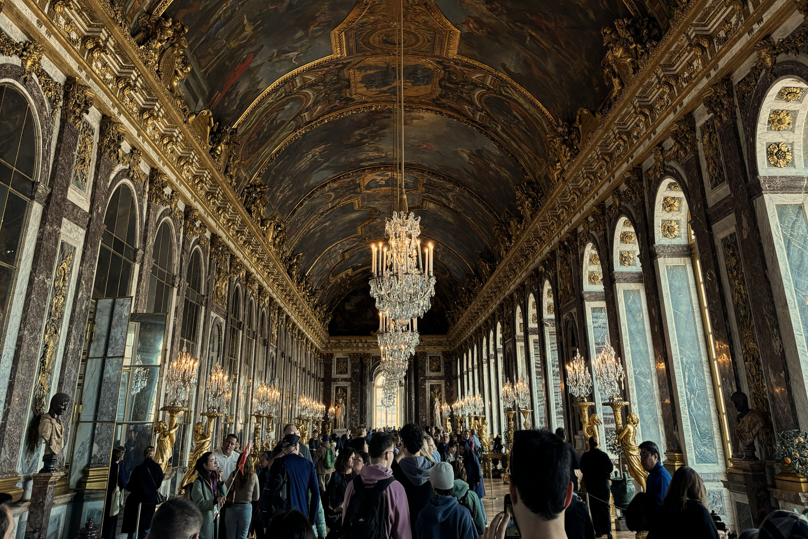

Stop 1
Hall of Mirrors (Galerie des Glaces)
The most famous room in Versailles: 357 mirrors reflect the windows overlooking the gardens. The ceiling is decorated with frescoes depicting the achievements of Louis XIV and the glory of absolutism. This room is a symbolic and choreographed element of royal representation.
